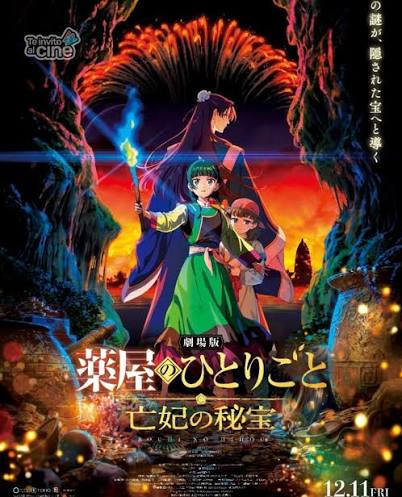

The Apothecary Diaries prepara su película
Novedad de 2026
The Apothecary Diaries anunció una película de anime con estreno previsto para el 11 de diciembre de 2026 en Japón.
La franquicia continúa ampliando la historia de Maomao, una joven que trabaja resolviendo misterios relacionados con la medicina.